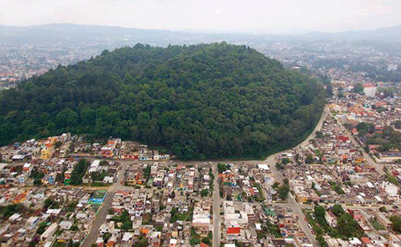

UN REFUGIO IRREMPLAZABLELa biodiversidad
La biodiversidad
tiene un hogar.
Aves residentes y migratorias, ardillas, tlacuaches, anfibios y reptiles conviven con la vegetación del bosque mesófilo de montaña.
Conoce a sus habitantesUn bosque en el corazón de nuestra ciudad.
Miles de vidas que dependen de lo que hagamos hoy.
de bosque urbano protegido
especies de aves registradas¹
árboles que dan vida a Xalapa²
año de su decreto de protección
Su historia demuestra que recuperar la naturaleza es posible. Proteger lo que hemos recuperado es nuestra siguiente tarea.

Un refugio de vida en medio de la ciudadDespués de décadas de extracción de leña, ganadería y pérdida de vegetación, la construcción de un camino despertó el interés ciudadano por recuperar el cerro. Fue el comienzo de una transformación colectiva.
Historia basada en la investigación de Numa P. Pavón, Revista Mexicana de Biodiversidad (2019). Consultar fuentes ↗
Cada árbol, cada raíz y cada especie forma parte de una red que hace nuestra ciudad más habitable.
Aves residentes y migratorias, ardillas, tlacuaches, anfibios y reptiles conviven con la vegetación del bosque mesófilo de montaña.
Conoce a sus habitantesLa sombra y la evapotranspiración ayudan a regular la temperatura y la humedad del entorno.
REGULACIÓN TÉRMICAEl suelo permeable favorece la infiltración de lluvia y la recarga de agua subterránea, esencial para proteger los manantiales.
INFILTRACIÓN DE AGUALos árboles capturan y almacenan carbono mientras sus raíces ayudan a proteger el suelo.
CAPTURA DE CARBONOUn espacio para caminar, observar, aprender y reconstruir nuestra relación con la naturaleza.
SALUD Y COMUNIDADReconocer los desafíos es el primer paso para atenderlos. Un bosque urbano necesita cuidado, conocimiento y participación constante.
La expansión urbana rodea al parque y fragmenta su conexión con otras áreas verdes. La fauna encuentra menos rutas para moverse y sobrevivir.
AISLAMIENTO ECOLÓGICOSe han reportado ardillas con lesiones y cambios en el pelaje. Su causa requiere valoración veterinaria; no existe aquí un diagnóstico confirmado.
SALUD DE LA FAUNAAlimentar animales, dejar residuos o salir de los senderos altera el ecosistema. La educación ambiental transforma las buenas intenciones en buenas prácticas.
EDUCACIÓN AMBIENTALLas lluvias intensas pueden causar caída de ramas y árboles y daños a infraestructura. El monitoreo del arbolado y la prevención reducen riesgos.
EVENTOS EXTREMOSVigilar toda el área de forma continua es un reto. Los reportes oportunos ayudan a detectar afectaciones, residuos y posibles cambios en sus límites.
VIGILANCIA Y MONITOREOLa protección legal necesita gestión, recursos y seguimiento. La ciudadanía puede solicitar información y participar en el cuidado del parque.
CONSERVACIÓN EFECTIVALos reportes no equivalen a diagnósticos ni a resoluciones sobre responsabilidades legales. Ver contexto y referencias ↗
Estos esquemas muestran riesgos posibles. Comprender las conexiones nos ayuda a actuar desde la causa.
Conectar y proteger áreas verdes
Compartir buenas prácticas
Prevenir y cuidar el arbolado
Relaciones conceptuales de riesgo; no atribuyen un evento específico al cambio climático ni explican un diagnóstico de fauna.
Explora este mapa conceptual y descubre cómo conviven los espacios de disfrute y las prioridades de conservación.
Pequeñas vidas, un enorme valor. Observa con respeto: su mejor hogar es un ecosistema en equilibrio.
Fotografías de biodiversidad de referencia: no constituyen registros tomados en el parque.
Ser guardián es una forma de visitar, de aprender y de compartir. Elige las acciones que llevarás contigo.
Estos son los cambios que buscamos impulsar juntos.
Cuidado continuo y participación informada.
Menos residuos y atención oportuna a los riesgos.
Visitantes que conocen y respetan su entorno.
Hábitats saludables para la biodiversidad.